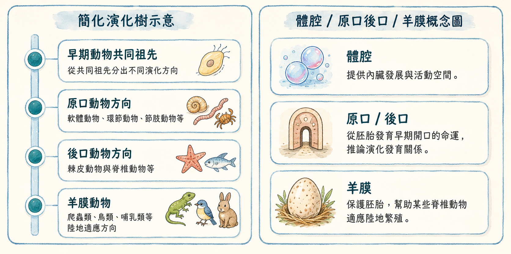

一、體腔——身體內部的空間
動物的身體複雜程度，可以用體腔來衡量。體腔是消化道與體壁之間的空腔，充滿體腔液，有緩衝保護和運輸物質的功能。
最簡單的動物，如刺絲胞動物、扁形動物，沒有體腔，器官直接嵌在組織中；較進步的動物，如環節動物、節肢動物、脊椎動物，則有真體腔，讓器官能各司其職、更有效率地運作。
前面的課程多從外形與身體構造來分類。這一頁要進一步思考：如果從演化關係來看，動物之間還有哪些更深層的共同線索？
分類動物時，我們可以先觀察外形、身體構造與生活方式。例如有沒有脊椎骨、身體是否分節、是否有外骨骼、是否用管足運動，這些都是好用的觀察線索。
但是科學家也會追問更深的問題：這些動物在演化上是否有共同祖先？哪些構造是從共同祖先延續下來的？哪些特徵是後來在不同類群中發展出來的？這就是演化觀點。
動物的身體複雜程度，可以用體腔來衡量。體腔是消化道與體壁之間的空腔，充滿體腔液，有緩衝保護和運輸物質的功能。
最簡單的動物，如刺絲胞動物、扁形動物，沒有體腔，器官直接嵌在組織中；較進步的動物，如環節動物、節肢動物、脊椎動物，則有真體腔，讓器官能各司其職、更有效率地運作。
另一個重要線索是胚胎早期發育時的開口命運：
這意味著海星和人類，在演化上的關係比海星和螃蟹更接近！
脊椎動物中，爬蟲類、鳥類和哺乳類的胚胎外面包有一層羊膜，可以在陸地上產卵或在母體內發育，不需要回到水中繁殖。
這些動物合稱羊膜動物，是陸地生活的重要演化適應。
外形分類讓我們快速辨識生物；演化分類讓我們理解生命的歷史。
當我們說「棘皮動物和脊椎動物同屬後口動物」，並不是說牠們長得像，而是說牠們在演化樹上共享一段較近的祖先歷史。
兩種視角各有用途，科學家通常同時運用兩者。
位於消化道與體壁之間的身體內部空間，有助於器官發展與身體活動。
胚胎早期形成的開口後來發育成口。軟體、環節、節肢動物常列入這個方向。
胚胎早期形成的開口後來發育成肛門，口在另一端形成。棘皮動物與脊椎動物都屬於此方向。
胚胎具有羊膜等構造，可保護胚胎；爬蟲類、鳥類、哺乳類都屬於羊膜動物。
